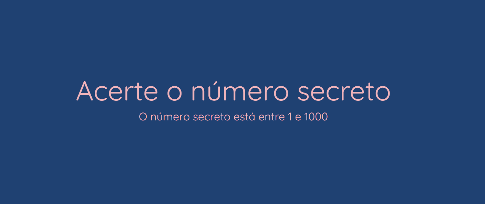

Jogo: Número Secreto
Ferramentas utilizadas:
- HTML
- CSS
- JavaScript

Este projeto foi desenvolvido durante o curso 'JavaScript: validações e reconhecimento de voz' na plataforma Alura. Decidi incluí-lo no portfólio por ter um grande carinho por ele. Nesse curso, aprimorei minhas habilidades em validação de formulários e aprendi a utilizar a API Web Speech, o que me permitiu criar um jogo super divertido. Ao longo do projeto, também aprendi a manipular dados, eventos e elementos com JavaScript, aplicando reconhecimento de voz e utilizando funções build-in para criar uma aplicação interativa e dinâmica. Para jogar é necessário habilitar o acesso ao microfone do navegador.